<div class="darker-background"></div>

<!-- social btns -->
<div class="footer-social-icons">
    <ul class="social-icons">
        <li><a href="" class="social-icon"> <i class="fa fa-facebook"></i></a></li>
        <li><a href="" class="social-icon"> <i class="fa fa-instagram"></i></a></li>
        <li><a href="" class="social-icon"> <i class="fa fa-google-plus"></i></a></li>
    </ul>
</div>

<!-- logo part -->

  
  <span class="slogen"> Homemade food- made with love</span>


<div [ngClass]="{'smallspace': isSmallHeader}" class="space"></div>

<!--- navbar - top --->
      <nav class="navbar navbar-default navbar-inverse" role="navigation" data-spy="affix" data-offset-top="555">
           <!-- Brand and toggle get grouped for better small display -->
           <div class="navbar-header">
             <button type="button" class="navbar-toggle" data-toggle="collapse" data-target=".navbar-ex1-collapse">
               <span class="sr-only">Toggle navigation</span>
               <span class="icon-bar"></span>
               <span class="icon-bar"></span>
             <span class="icon-bar"></span>
             </button>
             <a class="navbar-brand" href="#"></a>
          </div>

           <!-- Collect the nav links, forms, and other content for toggling -->
           <div class="collapse navbar-collapse navbar-ex1-collapse ">
             <ul class="nav navbar-nav navbar-right  "  id="menu_items">
              <li class="active navbar-right"><a routerLink="home" routerLinkActive="active" href="#">דף הבית</a></li>
              <li class="navbar-right"><a routerLink="" routerLinkActive="active" href="#">מי אנחנו</a></li>
              <li class="navbar-right"> <a href="#">אוכל ביתי</a></li>
              <li  class="navbar-right">
                 <a href="#" class="dropdown-toggle " data-toggle="dropdown" dir="rtl">סנן מתכונים לפי  <b class="caret"></b></a>
                    <ul class="dropdown-menu multi-level" role="menu" aria-labelledby="dropdownMenu" dir="rtl">
                          <li class="dropdown-submenu"><a tabindex="-1" href="#">לפי סוג</a>
                              <ul class="dropdown-menu">
                                 <li><a routerLink="search/צמחוני" routerLinkActive="active" href="#">צמחוני</a></li>
                                 <li><a routerLink="search/בשרי" routerLinkActive="active" href="#">בשרי</a></li>
                                 <li><a routerLink="search/ללא גלוטן" routerLinkActive="active" href="#">ללא גלוטן</a></li>
                                 <li><a routerLink="search/מנות צד" routerLinkActive="active" href="#">מנות צד</a></li>
                                 <li><a routerLink="search/סלטים" routerLinkActive="active" href="#">סלטים</a></li>
                                 <li><a routerLink="search/קינוחים" routerLinkActive="active" href="#">קינוחים</a></li>
                               </ul>
                           </li>
                          <li class="dropdown-submenu"><a tabindex="-1" href="#">לפי רמת קושי</a>
                              <ul class="dropdown-menu">
                                 <li><a routerLink="search/קשה" routerLinkActive="active" href="#">קשה</a></li>
                                 <li><a routerLink="search/בינוני" routerLinkActive="active" href="#">בינוני</a></li>
                                 <li><a routerLink="search/קל" routerLinkActive="active" href="#">קל</a></li>
                               </ul>
                           </li>
                           <li class="dropdown-submenu"><a tabindex="-1" href="#">לפי ארוחה</a>
                             <ul class="dropdown-menu">
                               <li><a  routerLink="search/ארוחת בוקר" routerLinkActive="active" href="#">ארוחת בוקר</a></li>
                                <li><a routerLink="search/ארוחת צהריים" routerLinkActive="active" href="#">ארוחת צהריים</a></li>
                                <li><a routerLink="search/ארוחת ערב" routerLinkActive="active" href="#">ארוחת ערב</a></li>
                              </ul>
                          </li>
                          <li class="dropdown-submenu"><a tabindex="-1" href="#">לפי חג</a>
                              <ul class="dropdown-menu">
                                 <li><a routerLink="search/ראש השנה" routerLinkActive="active">ראש השנה</a></li>
                                 <li><a routerLink="search/שבועות" routerLinkActive="active">שבועות</a></li>
                                 <li><a routerLink="search/סוכות" routerLinkActive="active">סוכות</a></li>
                                 <li><a routerLink="search/חנוכה" routerLinkActive="active">חנוכה</a></li>
                                 <li><a routerLink="search/פורים" routerLinkActive="active">פורים</a></li>
                                 <li><a routerLink="search/פסח" routerLinkActive="active">פסח</a></li>
                               </ul>
                           </li>
                           <li class="dropdown-submenu"><a tabindex="-1" href="#">לפי צורת בישול</a>
                               <ul class="dropdown-menu">
                                  <li><a routerLink="search/תנור" routerLinkActive="active">תנור</a></li>
                                  <li><a routerLink="search/גז" routerLinkActive="active">גז</a></li>
                                  <li><a routerLink="search/מיקרו" routerLinkActive="active">מיקרו</a></li>
                                  <li><a routerLink="search/בישול-ארוך" routerLinkActive="active">בישול ארוך</a></li>
                                  <li><a routerLink="search/טיגון" routerLinkActive="active">טיגון</a></li>
                                  <li><a routerLink="search/אפייה" routerLinkActive="active">אפייה</a></li>
                                </ul>
                            </li>
                    </ul>
                </li>
                <li class="navbar-right"><a href="#">צרו קשר</a></li>
             </ul>

             <div class="col-sm-3 col-md-3">
               <form class="navbar-form" role="search">
                 <div class="input-group">
                   <input type="text" class="form-control" placeholder="חיפוש" name="q">
                   <div class="input-group-btn">
                     <button class="btn btn-default" type="submit"><i class="glyphicon glyphicon-search"></i></button>
                   </div>
                 </div>
               </form>
             </div>
           <button type="button" class="btn btn-default navbar-btn  btn-inverse  navbar-left  btn-xs "  >Register</button>
           <button type="button" class="btn btn-default navbar-btn  navbar-left btn-xs btn-primary"  >Sign in</button>
         </div><!-- /.navbar-collapse -->

        </nav> <!-- End of Nav Bar    ------------------------>
